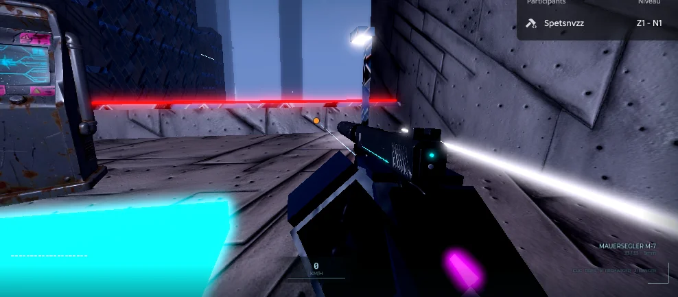
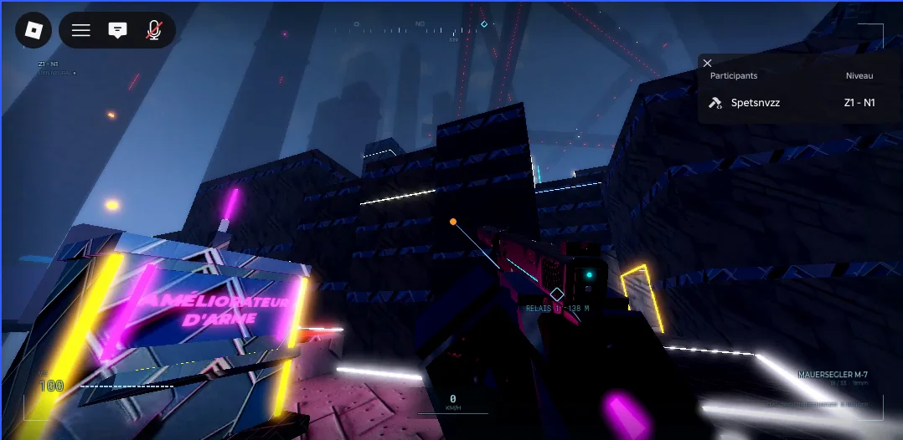
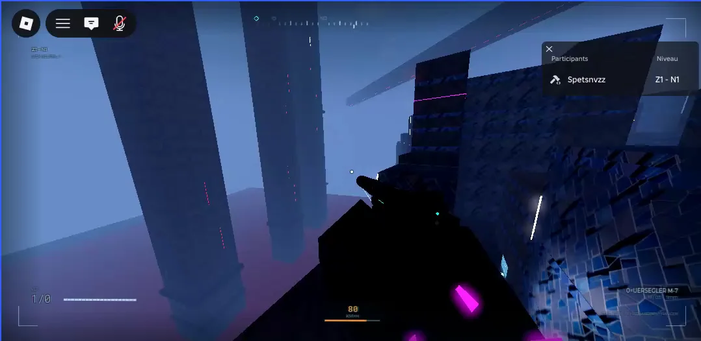

Jeu Roblox
En développement

La mégastructure : le joueur doit monter du bas jusqu'au sommet.
GenreParcours (obby) en vue à la première personne
MoteurRoblox Studio, langage Luau
3DBlender
ÉtatSystème de jeu en test, niveaux en création
Le concept
Un jeu de parcours dans une mégastructure abandonnée, à grimper du bas jusqu'au sommet. La mobilité est au cœur du jeu : le joueur enchaîne les mouvements pour aller le plus vite possible. Le jeu n'est pas encore publié : le niveau actuel sert de zone de test pour régler les mouvements.
Où en est le projet
Déjà fonctionnel
- Déplacements : saut et double saut, dash, glissade, grappin, téléportation, course sur les murs, escalade verticale, accroche aux rebords, rebond sur les murs.
- Couteau de téléportation : une fois lancé, il téléporte le joueur à l'endroit où il atterrit.
- Armes : pistolet MAUERSEGLER M-7 (modélisé dans Blender) et lance-roquettes.
- Améliorateur d'arme : choix de la capacité du couteau, armure contre les explosions.
- Interface : vitesse, santé, munitions, zone et niveau en cours.
Ces systèmes fonctionnent, mais demandent encore beaucoup de réglages.
Prévu
- Les niveaux : 14 zones de 7 niveaux.
- Un mode contre-la-montre, avec classement des meilleurs temps et scores.
- Des affrontements entre joueurs.
- Un mode histoire.
- Personnalisation : skins, accessoires, patchs, compteurs stat-track, animations d'armes.
Ma part dans le projet
Concept et game design, choix et réglage des mécaniques, modélisation 3D et intégration, tests.
Le code Luau est écrit avec l'assistance d'une IA. Je le relis et je l'applique en cherchant à le comprendre, pour pouvoir le faire évoluer moi-même.
Captures


